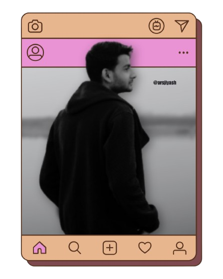

I’m Yash Sharma, a UI/UX Designer passionate about creating intuitive, visually stunning designs. From apps to websites, I blend creativity with functionality to craft unforgettable experiences. Let’s create something extraordinary!
UI/UX DESIGNER
UI/UX design is the art of creating intuitive, user-friendly, and visually appealing experiences for websites, apps, and digital products. It’s not just about making things look good—it’s about solving problems, enhancing usability, and making every interaction meaningful. If you’re looking for a designer who can turn your ideas into stunning, user-friendly experiences, let’s connect! Your vision + my expertise = unbeatable results.
Experiences
01 Years
Software
Figma
Project
03
Review
4.3
Intermediate
WEB DEVELOPER
Hi, I’m Yash Sharma, a passionate web developer specializing in UI/UX design, responsive web design, and front-end development. With a portfolio packed with innovative projects like portfolio designs, web applications, and more, I bring creativity, precision, and functionality to every project. Let’s build something extraordinary!
WEB DEVELOPER
Web Development is the backbone of your online presence—creating fast, functional, and stunning websites that connect you with your audience. In today’s digital world, a professional website is a must to stand out and grow your brand. I’m Yash Sharma, a skilled developer with a proven track record of delivering responsive, user-friendly, and visually appealing websites tailored to your needs. Let’s turn your vision into reality—hire me today and let’s build something amazing!
Experiences
02 Years
Language
HTML, CSS, JavaScript
Project
05
Review
4.5
Expert
FilmMaker
I’m Yash Sharma, a storyteller at heart with a sharp eye for cinematography, a flair for creative editing, and the ambition to bring visions to life. From capturing breathtaking visuals to crafting compelling narratives, I thrive on turning ideas into cinematic masterpieces. Ready to create something extraordinary?
Filmmaking
Filmmaking is the art of turning stories into visual masterpieces that captivate and inspire. In today’s world, a powerful film can elevate your brand, connect with audiences, and leave a lasting impact. I’m Yash Sharma, a passionate filmmaker specializing in cinematography, creative editing, and storytelling. With a keen eye for detail and a drive to create unforgettable visuals, I bring your vision to life. Ready to make something extraordinary?
Experiences
04+ Years
Software
Pr, Ps, Ae, Davinci
Platform
YouTube, Instagram, Facebook
Review
4.8
Expert
GRAPHIC DESIGNER
I’m Yash Sharma, a passionate designer who turns ideas into eye-catching visuals. From thumbnails and posters to product packaging, I specialize in creating designs that are not just beautiful but also impactful. Ready to elevate your brand’s visual identity? Let’s create something amazing!
GRAPHIC DESIGNER
Graphic Design is the art of turning ideas into visuals that speak louder than words. From thumbnails and posters to product packaging, I’m Yash Sharma, a creative designer who crafts designs that are not just eye-catching but also impactful. Whether it’s building your brand or grabbing attention, I deliver designs that stand out and drive results. Ready to elevate your visuals? Let’s create something amazing!
Experiences
04+ Years
Software
Ps, Ai, Canva
Project
50+
Review
4.5

Expert
SOCIAL MEDIA EXP.
I’m Yash Sharma, a results-driven social media pro who turns data into strategy and ideas into engagement. From crafting winning marketing plans to managing digital content and analyzing trends, I help brands grow, connect, and thrive online. Ready to elevate your social media game? Let’s make your brand unstoppable!
SOCIAL MEDIA EXPERT
I’m Yash Sharma, a results-driven social media pro who turns data into actionable strategies and ideas into engagement. From crafting winning marketing plans to managing content and analyzing trends, I help brands grow, connect, and thrive online. Ready to elevate your social media game? Let’s make your brand unstoppable!